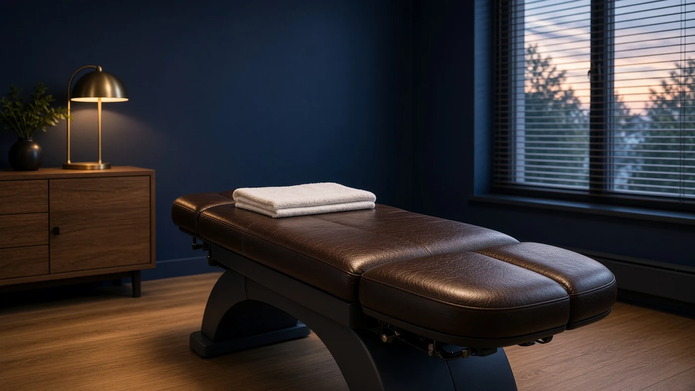
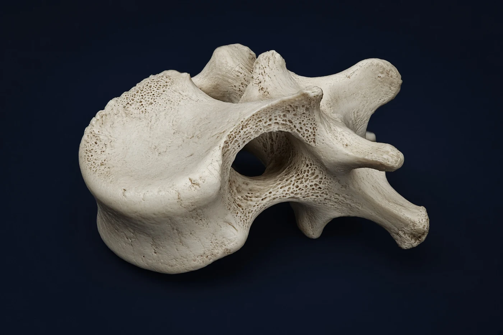

Rutherford, New Jersey
DENNIS J.
BARTECK, D.C.
Care for the spine.
A wider view of the person.
Assessment, hands-on care, and a plan informed by your history.
Explore the anatomyPOSTERIOR STUDY
01 / EXPERIENCEThree decades in practice
02 / FOUNDATIONLife University & Rutgers
03 / LOCATIONRutherford, New Jersey
01 / THE ANATOMY
THE SPINE.
IN DETAIL.
Cervical. Thoracic. Lumbar. Sacrum.
Twenty-six labeled structures. One spinal column.
02 / THE APPROACH
The person
behind the symptoms.
An adjustment is part of a larger conversation. History, movement, daily habits, and individual goals all have a place in the visit.

Personal attention.
Considered care.
01Chiropractic care
Hands-on assessment and individualized care focused on joint movement and the spine. The practice includes segmental adjusting and Cox Technic flexion-distraction.
02Functional medicine
A broader discussion of clinical nutrition, health history, and metabolic patterns, alongside the findings of the physical examination.
03Functional neurology
A neurological perspective on movement, coordination, and the way the body responds during examination.
04Neurofeedback
Neurofeedback is among the services offered by the practice. Suitability, expectations, and alternatives are discussed individually.
05Applied kinesiology
Muscle assessment within the practice's broader clinical approach, considered alongside the patient's history and other findings.
06Trigenics
The practice offers Trigenics neurological muscle work. The initial consultation establishes whether it belongs in an individual's care plan.

ANATOMICAL STUDY / VERTEBRA
03 / THE DOCTOR
A patient first.
A physician for life.
Dr. Barteck's interest in chiropractic began with his own experience as a patient.
That experience became a profession. After Rutgers University, he earned his Doctor of Chiropractic degree at Life University in 1996. His practice brings hands-on chiropractic care together with an interest in nutrition, movement, and the nervous system.
Today, he sees patients in Rutherford, New Jersey, with an approach shaped by three decades in the room with them.
Rutgers UniversityBachelor of Arts
Life UniversityDoctor of Chiropractic
State licensureNew Jersey & New York
04 / THE JOURNAL
A little understanding
before your visit.
Notes on the practice, the examination, and the questions worth bringing into the room.
05 / VISIT THE PRACTICE
Let's begin
with a conversation.
Appointments in Rutherford, New Jersey.
(201) 491-697071 Union Avenue, Second Floor
Rutherford, New Jersey 07070